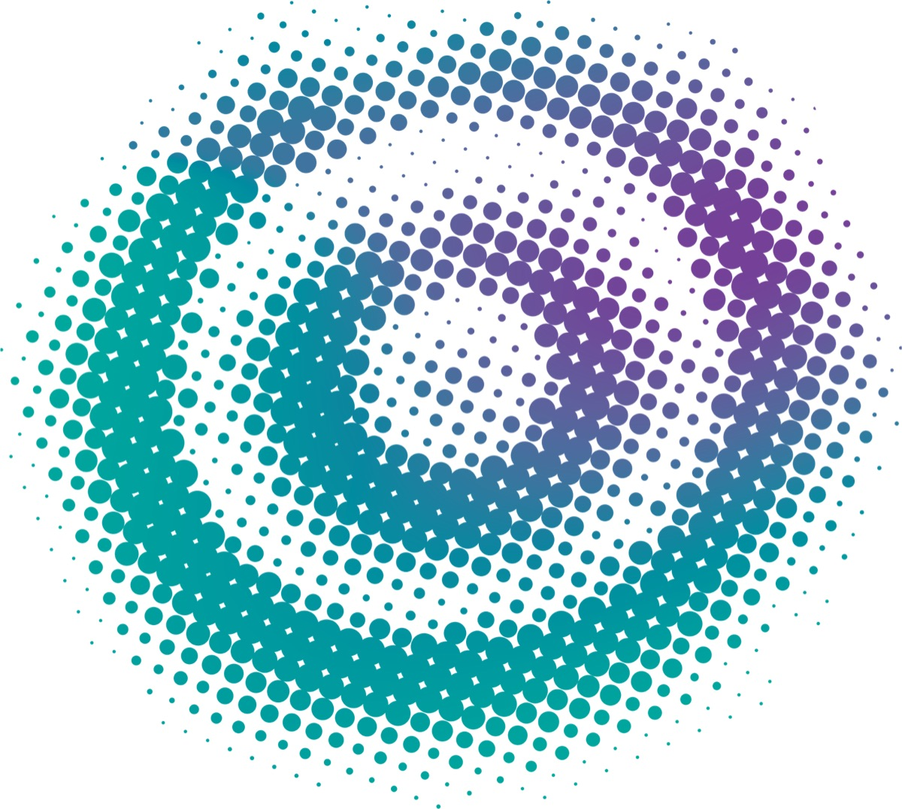
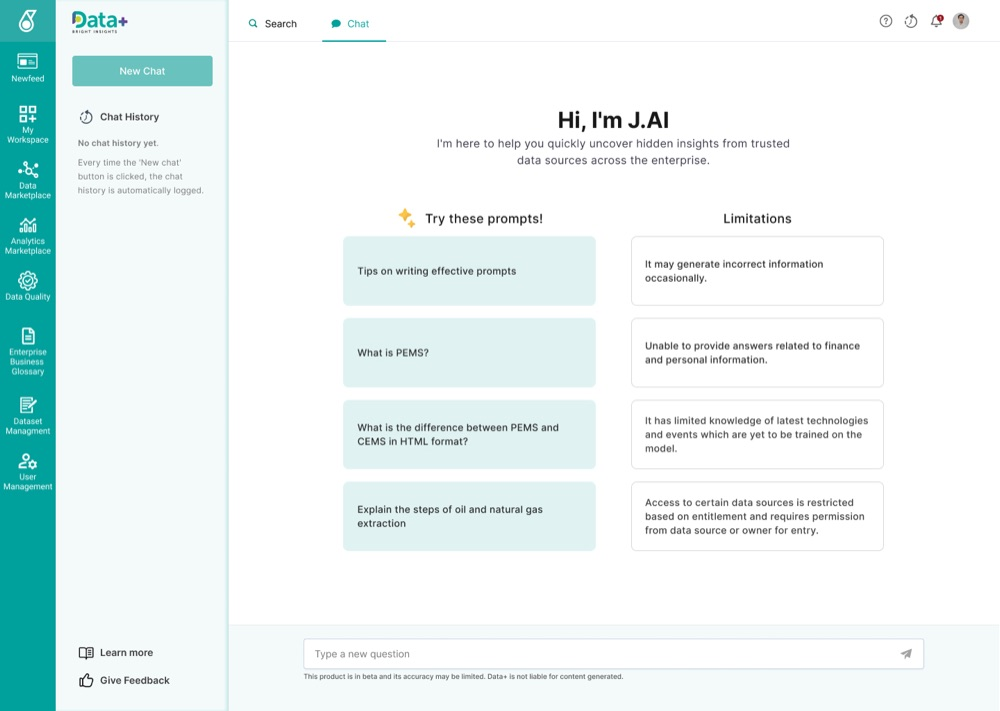
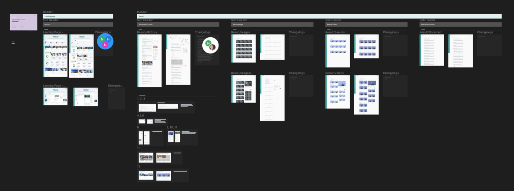
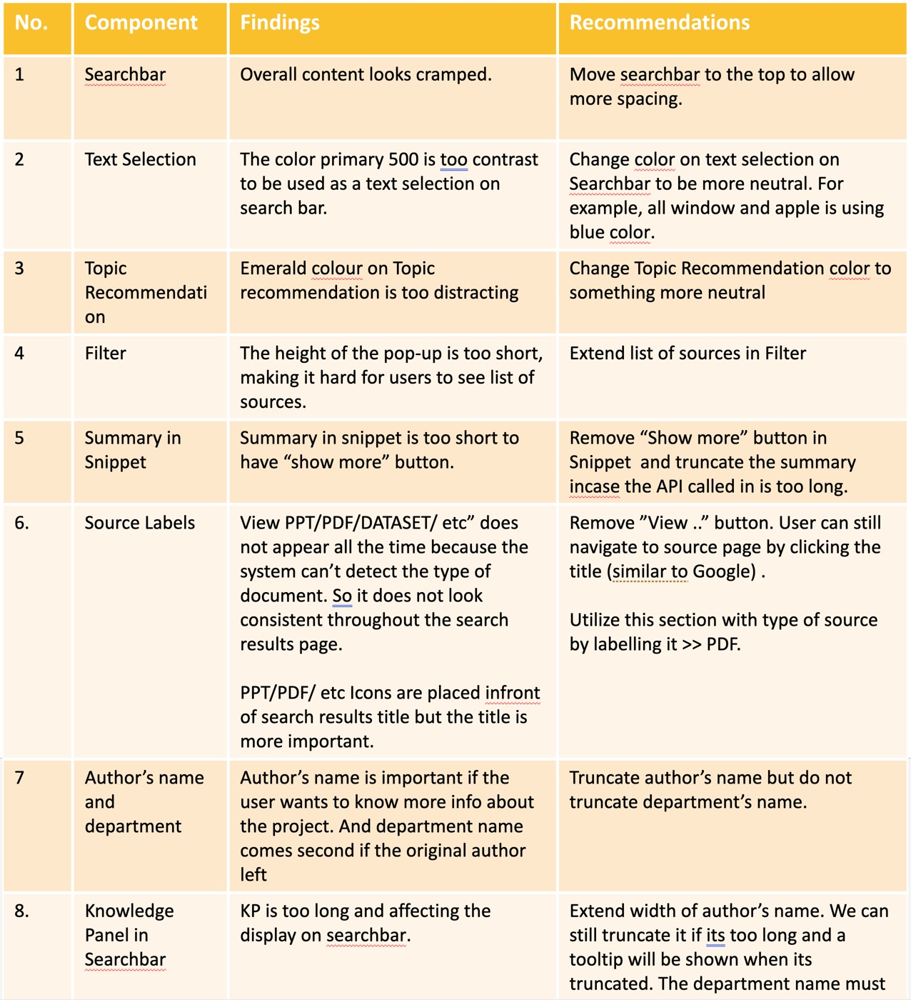
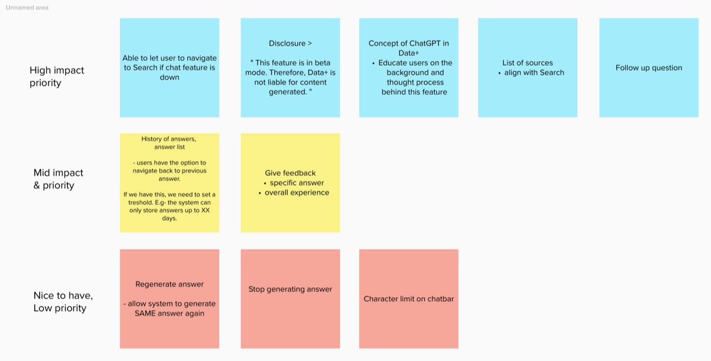
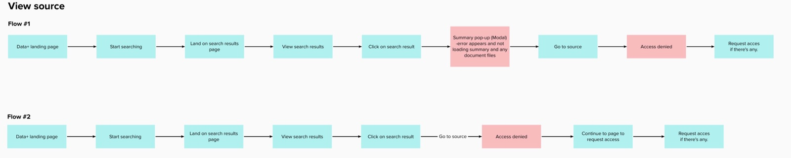
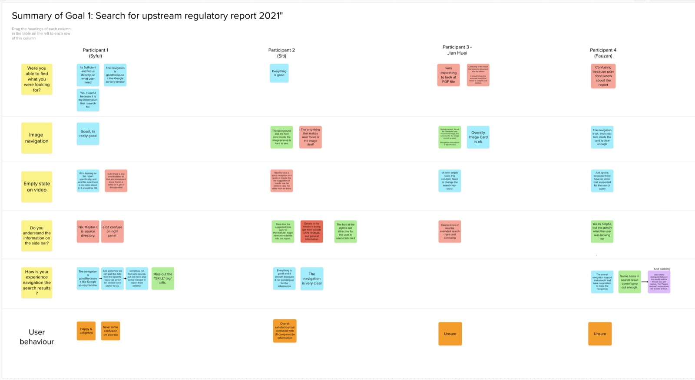
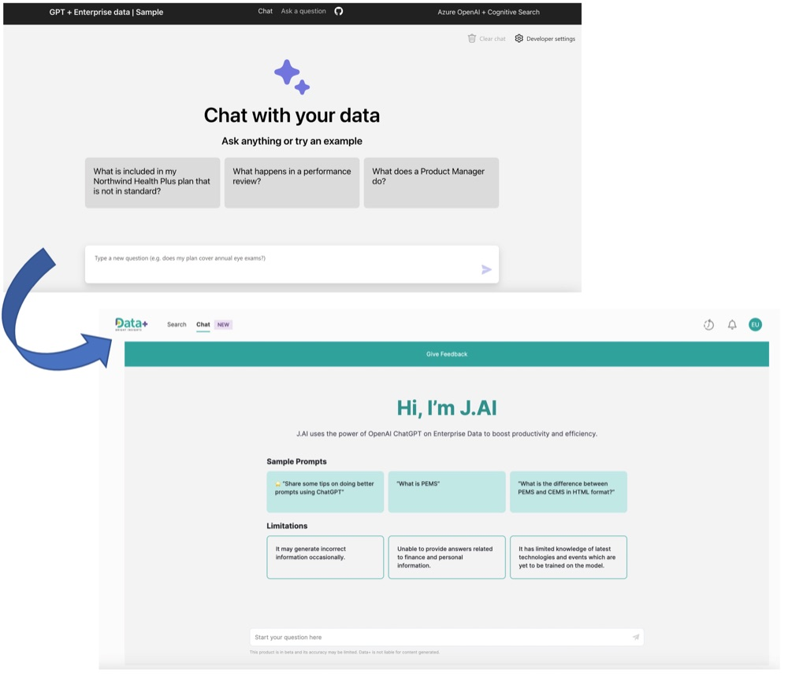

Case Study — 03
J.AI Project


01The Challenge
Conduct Design QC for the existing development
The development has already taken place when we were onboarded but many things were not align with the Figma file.
That prompted us to conduct a QC but as we were checking the design, we realised that some UX principles were not practiced. Hence, a design usability testing were conducted as our next step.

Findings and Recommendations

02The Process
Research, Usability Testing, Define Goal, Problem Solving
Phase 01 — User Research
Research
Conducted user research to understand search behavior, information needs, and pain points, shaping a more intuitive AI-powered search experience.
Phase 02 — User interview
Cart Sorting
We started with a simple cart sorting session with the project team of the basics of the chat function.
There are several specialist team (Microsoft team, OpenAI team) which worked on the entire Information architecture of how knowledge flows from different Petronas platforms and the web to ChatGPT.
User flow
Based on similar ChatGPT models that are available on the net, we performed user flows and obtained validation from both business and developers.


Phase 03 — Validation
Usability & Stress Tests
During the usability testing, it was confirmed that the functions, features, and overall purpose of the product were aligned with user expectation.
However, the majority of users expressed doubts regarding the relevancy of search results and found the information on the search results page complicated because of the repetition of information shown. Despite these concerns, most users enjoyed using the product and expressed a willingness to continue using it if the right data is provided. The findings from the testing process resulted in 21 potential enhancements.
5
Users
15
Tasks
2
days
11
pain points

03The Deliverables
BETA Version
To test out the language model quickly with our users, we used an existing Azure OpenAI ChatGPT template but personalized it to Petronas branding.
68
Feedback submissions
3.57/5
Average rating
We asked our users to try out J.AI BETA and provide feedback on the experience. The feedback indicated that there is room for improvement in certain areas, such as providing more detailed answers, increasing the number of sources used, and reducing instances of hallucination.

04The Impact
Comments
Up NextHMI Automotive Project
HSE Manager
"The LLM needs a lot more training on Petronas specific resources to be useful in a petronas work context"
Analytics & Process Control Engineer
"Faster to get the context, not after 2-3 clarification needed."
Solution Domain
"The capabilities is almost similar to chatGPT but chatGPT is able to draft emails, letters and etc. However, J.AI still have that limitation."